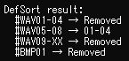

定義の整列
定義リストの内容を最適化する機能です。
- 未使用定義の削除と、空白詰めを含む並べ替えができます。
- BMSファイルの基数(≒最大定義数)を変更することもできます。
- Version 0.5.0 時点ではリネームや未使用ファイルの削除には未対応です。
説明
要素をクリックすると説明が表示されます。- 未使用定義は、全ての分岐枝についても調査します。
-
整列の完了後、コンソールに定義番号の変換結果が表示されます。
- 実際には何も変更されなかった場合、コンソールにはDefSort had no effect.と表示されます。